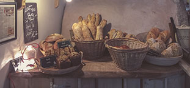
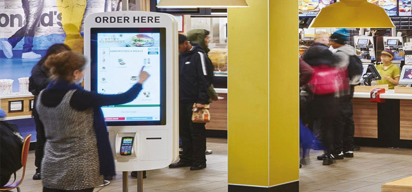
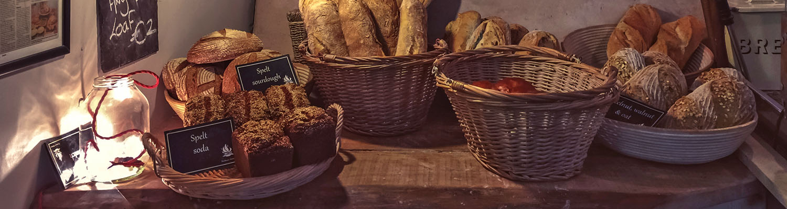
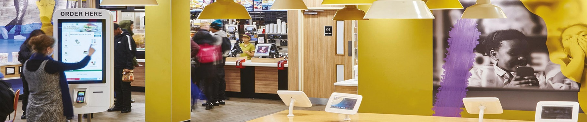

Business Сases
Depending of the kind of store, type of setting, volume of cash usage and customer’s requests Numus will provide an adapted solution with specific hardware that covers all requirements for the minimum costs. The exclusive software Numus Plaza is common to all the Numus clients and it will be configured by Numus consultants to fully embraced the reality of the customer’s business.
Discover how Numus adapt to different kind of business from restaurants to fashion stores and how it helps to transform businesses to be more competitive and tackle the challenges of retail business nowadays. Numus can help your business too!
Supermarkets

With high level of sales, supermarkets deal with a lot of cash and the hassle can be huge for cashiers and managers
Bakeries
With mainly small amount transactions, bakeries get a very high proportion of their payments in cash.
Fashion Stores

Fashion shops also get high levels of cash, especially during the sales period.
Global Retail Chains
Global chains of retail always want to be ahead when it comes to technology. Numus provides them with the latest technology on cash management.
Restaurants
Considering their hygiene obligations, restaurants employees need to be very careful with cash handling.
Supermarket
Features
Grocery retail companies have been withstanding the rise of ecommerce better than others retail sectors, but as main e-commerce players move forward to tackle this business with millionaires investments traditional retail grocery player must keep innovating to stay relevant and competitive.
Supermarket chains received a significant percentage of their payments in cash, as they have a high rotation merchandise business model that means tons of cash money circulating through their stores every day. The main concerns of supermarkets executives and operations directors are how to increase in-store efficiency, higher treasury optimization and increase security from robberies and internal fraud.
Handling cash in a supermarket
Handling cash in a supermarket is a time consuming activity with no added value to the end customer. Cashiers have to count the money at the beginning and end of their shifts, sometimes even more depending on company rules. This means hours of work wasted in something totally unnoticed for the store visitors, but as the cash usage is relevant companies have to offer the option to pay with cash to maximize their conversion possibilities. If using Numus service the supermarket companies will save all the time their employees are counting money, as Numus Smart-Tills will count the money automatically every time there is a transaction. The cash is monitored at all times and if there is a mistake by the cashier it can be solved when the client is still at the point of sale because the automatic message will alarm of the mismatch.
CiT Services
Most supermarkets use CiT services due to the high amounts of cash they handle. Nowadays CiT companies pushed for implementing fixed visits and fixed pricing schemes, no matter how much cash they have to handle the price is the same every month. Numus optimize the CiT visits to make it more affordable and less problematic to supermarket operations. Additionally, more time will be saved as Numus will communicate the orders for pick up money and the need of change money in real time. CiT will always know what are the need of the store with no human intervention.
The security is also increased internally as employees are fully accountable for all cash transactions they make. Every time a client decides to pay a purchase with cash a file is generated with the amount of the transaction, employee number, date, time, and more relevant data and it is stored in the NTC to be transmitted to the Numus cloud storage. The shrinkage is reduced to zero which means more profits to the supermarket. Additional guarantees are provided by Numus. At the moment a cash transaction is done the money get booked in the merchant’s account and is no longer their risk, Numus insures the companie’s money.
Optimize Supermarkets
Supermarkets are a volume business with thin operational margins. Supermarkets executives need to optimize the treasury of the organization. In this field Numus is also helpful. First as the cash levels are always monitored and the CiT company is always informed of the cash needs of the stores the float of money can be reduced to a minimum. This release of money improves the liquidity and make possible to invest it in profitable ventures. Additionally, Numus provide a pre-credit capability to their customers. This means that after a transaction is done the company is able to use that money. If the end customer decide to buy with cash a box of cookies the supermarket can order the same day the same product and pay with the money of the customer. More liquidity means better financial position and a healthier bottom line.
Bakery
Bakery
A small Bakery chain with locations in prime streets of several main European cities got interested in the Numus solution looking for alternatives to increase their efficiency and their hygiene standards. One of the main concerns of the owners was to be able to increase the speed of delivery during peak times so there were no clients to leave the store for too much waiting time. Additionally, as the company was focused of serving upper class individuals, they were always looking to offer the best service possible to their clients, including the maximum hygiene possible.
After a study of the situation Numus installed Full Automatic Smart-Tills and a Smart-Safe in the back office. Depending on the size of the store from one to five Full Automatic Smart-Tills were installed. This state-of-the-art hardware is a closed system to fully handled cash payments in a store. It is composed of a note slot with validation capabilities, coin hopper to introduce coins in bulk, coins and notes recycler and a high capacity compartment to stock up notes. At any moment the employees have to touch cash, the device itself collect the cash, validate it and return change money. This was exactly what the owners of the bakery chain was looking for and they could start benefiting from it without any upfront investment and after only one day on installation.
It is well-known that notes and coins are a source of pollution as they are handle by many hands and are exposed to many different atmospheres. The hygiene of the service have reached a new level as the salespeople do not have to touch money in any moment. Customers appreciate that the same person that is attending them and handling the pastries and cakes is not polluting neither their hands, neither the counter top of the establishment.
Accelerate the checkout process
Taking advantage of the capabilities of the Full Automatic Smart-Tills has equally helped to accelerate the checkout process in the store, making even faster a payment in cash than a payment in credit card. When a customer decides to pay with cash the store clerk select in the POS the order and select cash payment option, from that moment the employee can take care of the order and will be the customer the one inserting the money in the device and receiving the change. Not a single second lost in handling cash, the cash will remain guarded safely. At the end of the day the store manager will collect the money deposited in the stock compartments of each Full Automatic Smart-Till and transfer it to the Smart-Safe located in the back office.
Both devices Smart-Tills and Smart-Safes are connected to the Internet and both can track their respective cash levels and available change money. Therefore, the process to order a pick up from the CiT company is fully automated. The guards know beforehand how much money they should pick up from the Smart-Safe and how much change money they should deposit in the Full Automatic Smart-Tills.
Before the implementation of Numus the money was deposited in a bank branch personally for the Store Managers. This implied trips up to 30 minutes made by the most expensive resources of the bakeries: the Stores Managers. Since Numus arrived the Store Managers do not have to leave their job anymore and have more free time as they do not have to manage the cash pick up orders or count money. Besides the security in the store has increased and now are less attractive to robberies, with the money being kept in armoured devices and being transport to the bank by accredited guards.
Fashion Store
Fashion Store
The case of a fashion retailer is very enlightening to show how Numus can help to transform a business from the inside to tackle the challenges that E-commerce has brought to traditional retailers.
In this case a multi-brand fashion boutique located in a high street wanted to improve their in-store operations while providing a better customer experience to their visitors. The store manager was convinced that to make people buy in the store and to convert them in recurrent shoppers, instead of online shoppers, they should make visitors feel connected with the brand values and proud to be a customer. He proposed the owners to look for alternatives that would free the shop assistants from tedious, repetitive and non-value added tasks so they can focus in provide a customer experience that will become the added value of the business.
When analyzing what tasks were adding additional stress to the employees while no providing any value to the store visitors, they determined that managing cash was taking too much time and energy from every member of the team. Shop assistants had to count the money deposited in the till at the beginning and end of their shift, and even when doing that, mismatchings would occur from time to time, causing to have to put time to investigate them, generating tensions among the members of the team. At the end of the day the store manager had to reconcile the day payments, having to count the money one more time, depositing the money collected during the day in a traditional safe located in the back office. If any discrepancy occurred the Store Manager had to count the money again and investigate the origin of the mismatching. At the end of the week and after the busiest day, Saturday, the Store Manager had to remain extra time to prepare the money for the CiT to pick-up and to send a message of how much change money will be needed for next week. Even the Store Manager as an experienced professional with attention to this daily process, couldn’t prevent that often they kept running out of change money, generating issues for the business operations.
More attention for customers
Numus received their call and after a study of their situation it was decided to install 2 Smart-Tills and a Smart-Safe for the back office. The installation was done in one day with no interruption of the business whatsoever. The implications for the business are evident. The shop assistants now do not have to count money anymore. After every transaction the Smart-Till monitor checks if the amount of cash deposited is correct and if there is a discrepancy, it can be solved when the customer is still in front of them. The Store Manager have reduced in 90% the time he used to manage cash, at the end of the day he just checks that the money deposit in the Smart-Safe matches the right amount. Also, he can forget about making the orders to the CiT. The CiT comes to store when necessary and they directly pick up the money from the Smart-Safe, depositing change money if necessary.
Additionally, the owners have increased the control on the store by being able to track cash levels on store in real time. The cash shrinkage has been reduced to zero with the corresponding increase in profit margins. The level of customer satisfaction has also improved with in-store employees fully focused in taking care of customers and preparing the store to look at it best. The overall opinion of Numus service is very positive with a high remark on improving the working environment for all involved parties.
Global Retail Chain
Your moment of change
Retail industry is at a time of change. The transformation was initiated by the arrival of the Internet and over the years it has become more noticeable, due to the unstoppable expansion of digital economy. E-commerce has eroded the traditional retail business model based on the products and the services. Nowadays customers can access an unlimited catalog of products and compare prices at anytime, anywhere even when they are shopping physically in stores. More convenience, better prices and bigger catalog to choose from, have been the changes that on-line shopping has taken advantage of to disrupt this market.
Global retail companies, chains with stores worldwide, cannot ignore this evolution of customer’s behaviour. Still the traditional model is profitable in many cases. Therefore, it is easy to foresight that traditional players need to evolve in order to survive, but this process must be taken in a logic, step-by-step sequence that respect the needs of the traditional customers but also appeal to the new generation that considers to buy on-line. In this study of the situation the traditional retail model has some benefits comparing to the on-line option. First, physical stores offer the option to pay in cash: an anonymous, instant and easy payment method. Cash represent a big percentage when looking at the number of overall transactions, even in developed countries. Cash is an opportunity to differentiate the physical shopping experience from e-commerce. Second, the traditiona retail stores can offer a more engaging customer experience that makes customers feel connected with the brands and proud to be a customer. Human element is key in this interaction, an exceptional customer experience always starts with the company employees that know it, care about it and are well-positioned to deliver it.
More liquidity to global retail companies
Numus offers a whole new service to manage the whole cycle of cash payments with global reach. It allows retail companies to take advantage of the option to offer cash payments to their clients. But thanks to its new technology it tackles the challenges of this new retail era. Numus increase in-store efficiency: no more money counting, no more trip to the banks (to deposit cash and to ask for cash money) and no more unknown cash shrinkage. It increases the accountability and control over employees, less managers are needed to look over cash as now everything is an automated and secured process. Since the moment a cash transaction is done the money is no longer responsibility of the merchant and it gets fully insured, total tranquility for the finance team of the company.
As Numus free in-store employees from the cash hassle, they have more time to focus on added value activities, such as, expending time arranging the store or providing a top-tier customer experience. According to several studies majority of companies are investing in innovations in the field of customer experience in an attempt to encourage clients to make their purchases in their physical stores, where they can transmit their values and make their users feeling proud to be customers increasing the "Life Time Value" of every client. The new competitive edge of retail companies is to connect with their clients in a whole new way. For that reason they need to use their most valuable resource –their employees- in a more efficient way, allowing them to focus on what really matters for the business.
Additionally, Numus will provide more liquidity to global retail companies thanks to its pre-credit capabilities. Merchants will be able to use the same money to replace stock at the moment a transaction is done. Numus also optimize float money as it increases control and visibility, right after Numus service is installed a considerable amount of money is free back to the business.
Restaurants
Restaurants
As many other businesses, restaurants are experimenting changes in their competitive environments since the arrival and expansion of the Internet. One of the latest trends in on-line food home delivery is the appearance of companies specialized in carrying food from restaurants to particular houses using freelance delivery boys who uses their own bicycles. Some estimations state that in some years the number of take away food orders done via Internet will surpass the number done by off-line means.
In spite of this situation the majority of restaurants generate their major income by the food serviced in their properties. Even the top-tier restaurants that serve an upper-class clientele refuse to deliver take away food. This is the case of a restaurant located in the city center of an European city with a long history, since its founding date more than 50 years ago.
This specific restaurant never thought of using Smart-Tills or Smart-Safes, because it is run as a traditional family business by non-tech savvy individuals. But the owner family was looking for new ways to improve the customer experience in their restaurant, as well as, increasing control and accountability of their waiters when handling money, due to fact that cash was the preferred payment method of their customers.
More Time for improve your business
They decided to implement Numus to get rid the hassle of managing cash. A Smart-Till was installed in the dining room and a Smart-Safe was set up in the storehouse, both on-line thanks to the existing Internet connection. The waiters can now offer a better customer experience as they do not worry of any mismatching in the cash payments. Before they all had to wait until the end of the day to know if there was any discrepancy, and if that occurred the amount was diminished from the tips pot generating a lot of controversy. Simply it was not possible to find the responsible person for the discrepancy because all waiters were using the same till. But now, even the operation flow is still the same, there is a detailed track of every transaction handled and if a discrepancy occurs the waiter is alarmed at the moment, so it could be solved on the spot.
With this new situation, even the managers have more time available to dedicate to the business. They do not have to spend time to do the reconciliation, which used to imply counting the money one or more times. As it is not necessary anymore that a manager has to stay until the end of the day to make the reconciliation the number of managers has been reduced by the owners doing the exact amount of work for a lower labor cost. Additionally, they do not have to carry the money to bank themselves anymore, as now there is an accredited CiT company that picks up the money and delivers change money when necessary.
The restaurant is now a more pleasant and efficient working environment and that has an impact in the level of service offered to the customers. Their on-line reviews have improved and the number of recurrent customers have increased significantly. Even for seasoned business owners the results are stunning and they are about to implement the Numus solution in a nearby hotel also owned by the family.